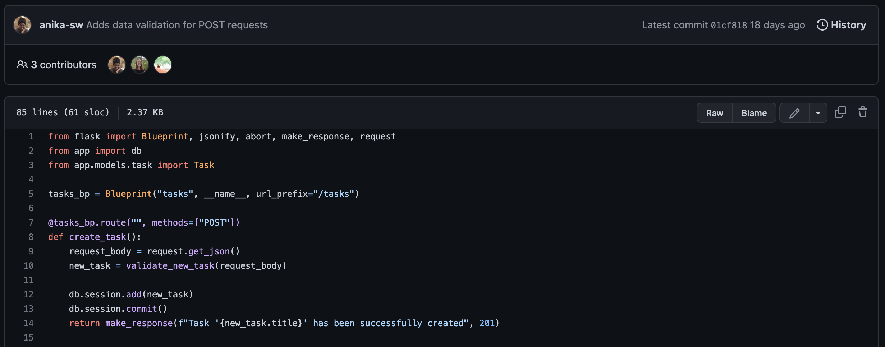
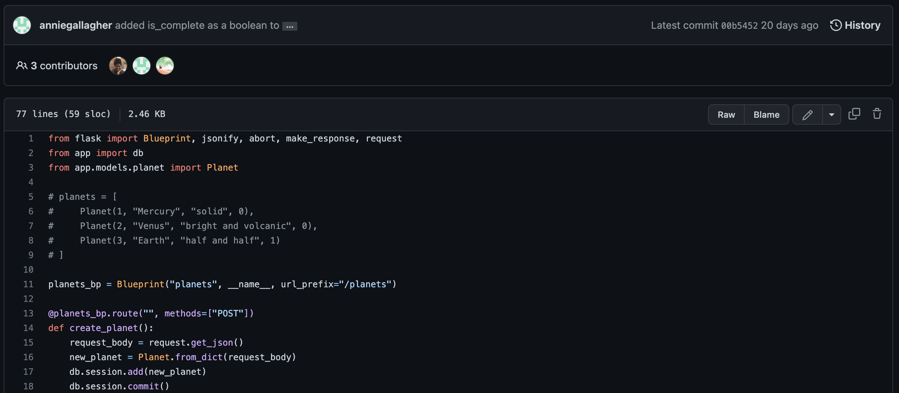
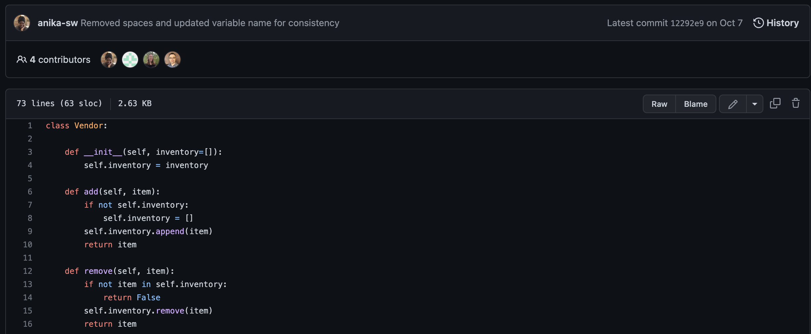
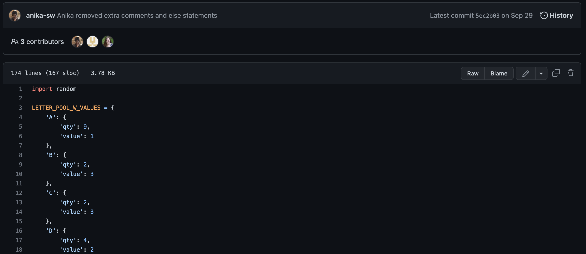
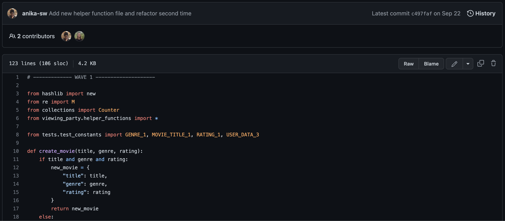

-
Task List API
Worked with SQL, Flask, relational databases, and principles
of CRUD to build an API centered around task completion.

-
Solar System API (collab)
Worked collaboratively with another Ada student utilizing SQL,
Flask, relational databases, and principles of CRUD to build
an API concerned with planets.

-
Swap Meet (collab)
Worked collaboratively with another Ada student utilizing Python
to build a program for swapping items between vendors and friends.

-
AdaGrams (collab)
Worked collaboratively with another Ada student utilizing Python
to build a game that creates words from randomly selected
(and weighted) tiles. The score for each word is calculated
to determine the game's winner.

-
Viewing Party
Used Python to build a program that reads the movie
lists for a friend group -- watched movies, favorite movies,
and movies to watch -- in order to generate movie recommendations.
